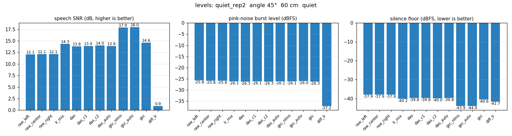
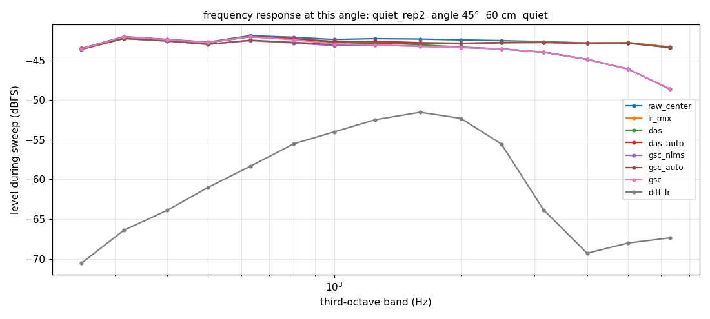
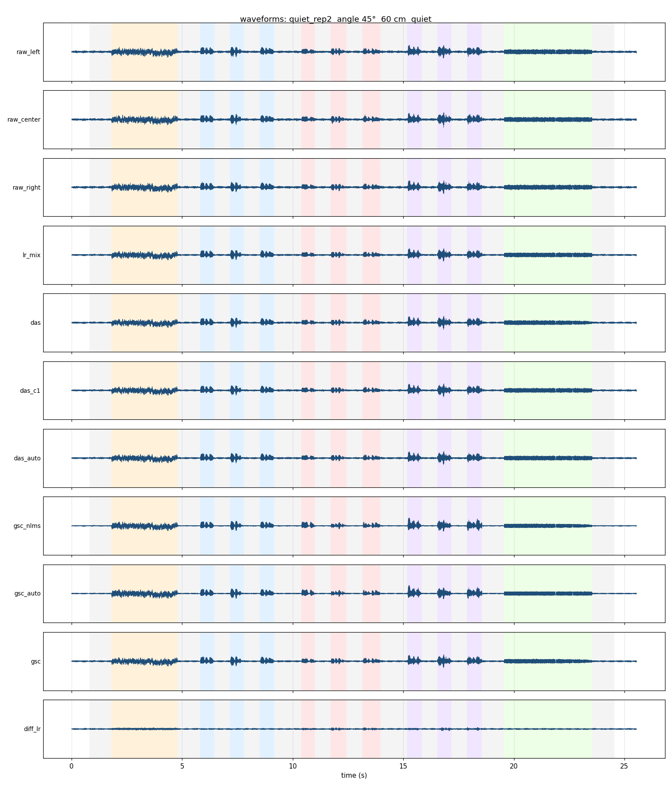
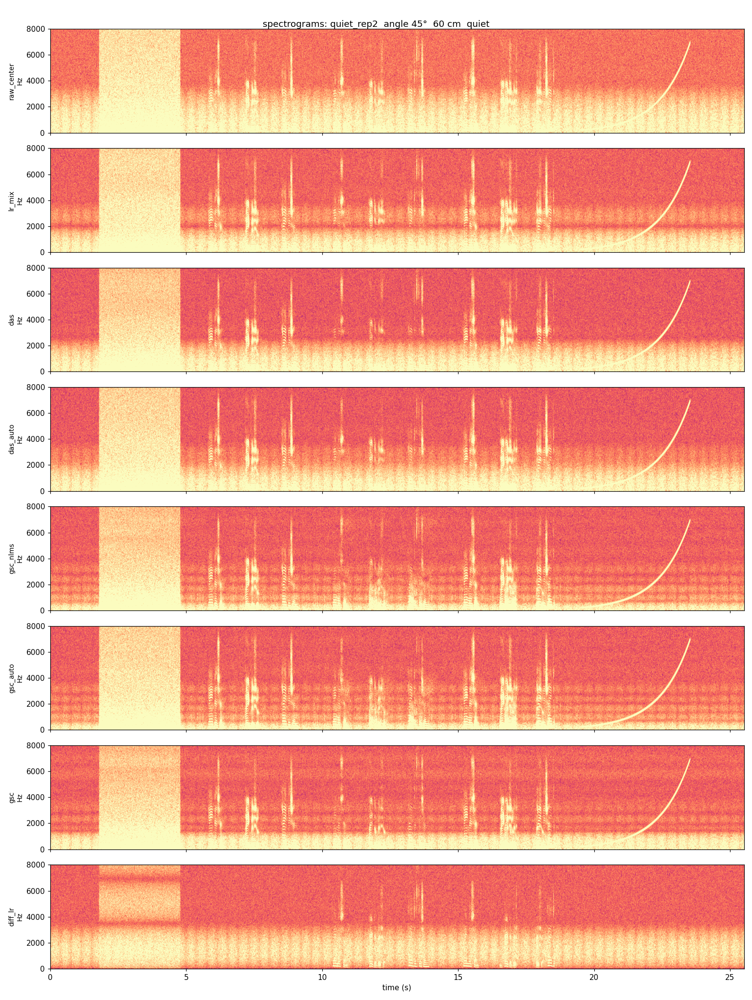

angle 45°, 60 cm, quiet, 25.55 s. Clip offset 0.8 s (confidence 0.942).
Microphones hear the source at +0° (L-R delay 0.0 samples, peak 7.6).
| path | rms_dbfs | speech_snr_db | noise_level_dbfs | silence_floor_dbfs | interf_rejection_db | interf_rejection_lf_db | snr_under_interference_db | speech_preservation | peak | clips |
|---|---|---|---|---|---|---|---|---|---|---|
| raw_left | -29.66 | 12.08 | -25.78 | -37.92 | -0.01 | 0.02 | 2.45 | 0.9749 | 9155 | 0 |
| raw_center | -29.66 | 12.1 | -25.79 | -37.92 | 0.0 | 0.0 | 2.47 | 0.9771 | 8986 | 0 |
| raw_right | -29.65 | 12.1 | -25.79 | -37.93 | 0.04 | 0.06 | 2.59 | 0.9748 | 8471 | 0 |
| lr_mix | -30.06 | 14.32 | -26.11 | -40.22 | 0.72 | 1.24 | 3.22 | 0.9941 | 8744 | 0 |
| das | -30.26 | 13.79 | -26.31 | -39.75 | 0.67 | 0.8 | 3.09 | 8742 | 0 | |
| das_c1 | -30.03 | 13.89 | -26.14 | -39.8 | 0.65 | 0.86 | 3.15 | 0.9935 | 8824 | 0 |
| das_c2 | -30.34 | 13.98 | -26.31 | -39.97 | 0.64 | 1.04 | 3.02 | 0.9824 | 8790 | 0 |
| das_auto | -30.03 | 13.89 | -26.14 | -39.8 | 0.65 | 0.86 | 3.15 | 0.9935 | 8824 | 0 |
| gsc_auto | -30.02 | 17.96 | -25.97 | -43.99 | 0.17 | 1.01 | 3.18 | 0.976 | 9287 | 0 |
| diff_lr | -40.21 | 0.86 | -37.2 | -41.74 | 8.27 | 7.77 | -12.02 | -0.0051 | 3105 | 0 |
| gsc | -30.34 | 14.6 | -26.27 | -40.57 | 0.9 | 1.34 | 3.31 | 0.9957 | 8574 | 0 |
| gsc_nlms | -30.21 | 17.87 | -26.15 | -43.94 | 0.11 | 0.88 | 3.22 | 0.9814 | 9361 | 0 |



